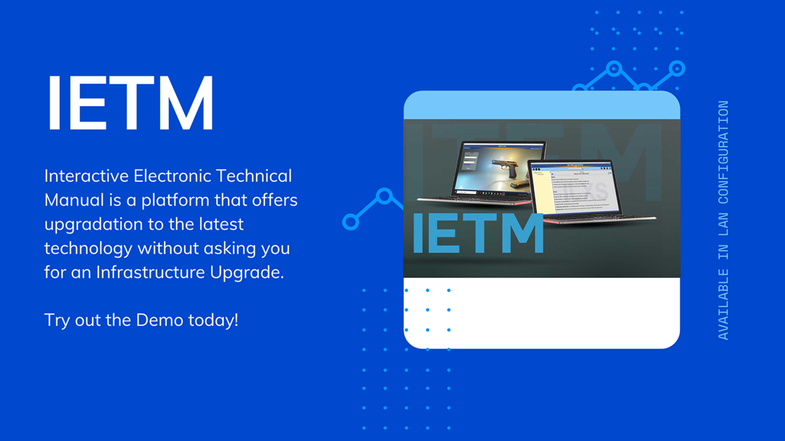
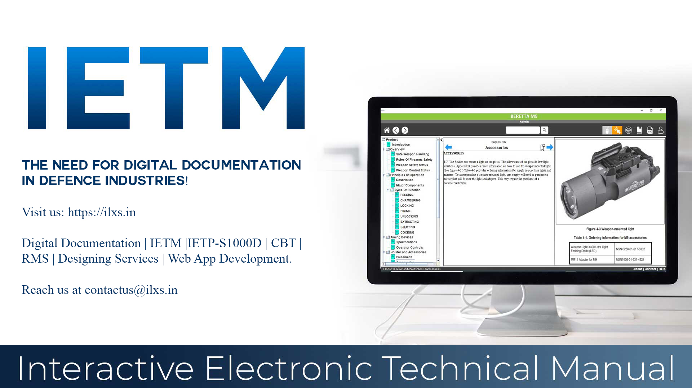

Activities at ILXS
#ILXS Introducing tailor-made application for project workspace management or Document control called as #Record #Management #System or #RMS.
— ILXS (@ilxs_india) March 12, 2021
Take a glimpse of Features at: https://t.co/kP4HhI9s9B
Evolving Documentation.
— ILXS (@ilxs_india) February 26, 2021
In the world of teamwork, planned executions, role players, SOP's documentation plays a vital role in attaining the utmost efficiency in accomplishing activities.
link for complete article: https://t.co/2bpyW23v7Ghttps://t.co/JxZufROpCN#IETM #IETP #CBT
What's better than to have an application that lets you learn, understand, grasp all that at your own pace.
— ILXS (@ilxs_india) February 18, 2021
Computer-Based #Training/#CBT allows you to do that all with procedural #animated #videos along with vocals, subtitles, annotations & many more.
Reach us out for #Demo pic.twitter.com/JbXj0RJ01y
Interactive Electronic Technical Manual.
— ILXS (@ilxs_india) February 17, 2021
IETM a solution to reduce MTBF, MTTR, MTTF, and MTTA in Maintenance and Operational activities. It offers Technical literature in a digital format providing an upper edge by offering numerous features.#IETM #ietmclasses #electronicmanual pic.twitter.com/xxNwbns8Ud
Simplify your technical documentation needs with
— ILXS (@ilxs_india) February 15, 2021
Providing tailor-made optimized solutions.
Take a look at our products at https://t.co/scdMQGk9DM
Product video link: https://t.co/9SoJrC3Yjo#Demo #ietm #Ilxs #defnce #documentation #cbt pic.twitter.com/zf3iewcnxK
Interactive Electronic Technical Publication / #IETM is an application developed and designed for #E_learning and #training of #endusers. It complies with the #S1000D standard.
— ILXS (@ilxs_india) February 24, 2021
Visit us https://t.co/scdMQGk9DM#Documentation
Track Info:
Genre and Mood: Dance & Electronic + Happy pic.twitter.com/80QRAgb4Rt
Industrial Photography
— ILXS (@ilxs_india) February 21, 2021
In the world of #visualization what matters is how we help end-user imagine and understand products. ILXS can help you to make the product appealing by combining it with its application.#ILXS #industrial #photography #product #animation pic.twitter.com/V8a1CTmZSs
Happy Chhatrapati Shivaji Maharaj Jayanti!
— ILXS (@ilxs_india) February 19, 2021
A Warrior
A Hero
A Legend#ChhatrapatiShivajiMaharaj #fatherofindiannavy#IndianNavy #ilxs #Visionary #Courage #warrior #nationfirst #planning #documentation pic.twitter.com/Vy1kIdllD7
Evolving Documentation.
— ILXS (@ilxs_india) February 16, 2021
-#ILXS#Documentation #IETM #TechnicalDocumentation #Interactive #IETP #DocumentationManagement #Defence #SystemHandling #ComputerBasedTraining pic.twitter.com/MYNdir606B
Evolving Documentation

In the world of team work, planned executions, role players, SOP's documentation plays a vital role in attaining the at-most efficiency in accomplishing activities. It all started long back with Technical Publications in the form of Hard copy Manual and later in Soft copies of same.
Interactive Electronic Technical Manuals brought the shift to documentation raising it ground while providing interactive interface. These interactive interface provides ease of reach-ability to exact required section, faster learning experience with procedures in the form of animations, videos, interactive flowcharts, and many more.
In the upcoming trends of data handling, for ease of data handling xml, sgml came in picture. The Interactive Electronic Technical Publication is the interface which comes with capability to segregate and display the relevant content on to the screen.
In this race of Evolving...
ILXS Private Limited offers software solutions of digital documentation for the Defence & Aerospace sector. All our products are developed and designed for user-friendliness, easy installation, and meagre upgrade to hardware, easy backups & restores. The software ensures no maintenance is required to operate it. It supports more than a decade old IT infrastructure. Demonstration of all the products to get your imagination of requirement clear.
The most important aspect to get the utmost efficiency from any defence system is proper handling and routine maintenance. Technical Literature and Training provided along with the product is the key to perfect machine handling and management.
ILXS offer Interactive Electronic Technical Manuals / Publications, which provide data in a segregated hierarchy while referencing the same with interactive videos, animations, etc. All of our products are complaint with global defence standards such as MIL, JSG, and S1000D. We also provide customizations as per user requirements.
We also offer a Computer-Based Training Module, which consists of procedural animation videos to assist the activities of operations and maintenance. It gives flexibility to the user to understand and learn the system at their own pace and revisit the module as and when required.
Document life cycle management is the most important factor for any Project. To cater for this requirement ILXS has developed a Record Management System software. It provides project monitoring workspace to the team. It also provides flexibility to the user to maintain the Document / File life cycle by version control.
ILXS not just believes in developing products for you or providing service to you.
ILXS aims to provide you experience of reliability and providing you deliveries of a bit more than what we promise...
We provide the following products:
- Interactive Electronic Technical Manual (IETM)
- Computer Based Training (CBT)
- Interactive Electronic Technical Publication (IETP) in S1000D specification
- Technical Documentation (User Manual, Maintenance Manual, Part List, Illustrations, etc.)
- Record Management System
- Tailor-made Web-Based Applications
Thank you for your time.
The need for Digital Documentation in defence industries!

As the world is adapting to new technologies, the documentation sector is upgrading from conventional, paper-based documentation to digital documentation. The documentation is developed using a structured XML, HTML, or SGML template and integrated into a standalone or server-based application. This application is known as Interactive Electronic Technical Manual (IETM) or Interactive Electronic Technical Publication (IETP). IETM's, IETP has proved to pace up the learning cycle, reduce maintenance downtimes and eliminate the need for storage space on-board equipment. Now let us understand how digital documentation is benefitting on multiple levels.
The introduction of digital documentation has given the flexibility to upscale graphical literature with multimedia support. Annotating the thoughts at any point in the learning process gives a personal touch to highlight and record the important data. Credential-based access ensures that the right amount of data is accessible to a particular user. The conventional way of printing the literature and reprinting in case of small errors is a costly and time-consuming process. The digital documentation solutions i.e. IETM's / IETP comes with built-in editors that provide revision control to the upgraded/modified literature. Hotspots, animations, wire tracing, and exploded views help any user, experienced or inexperienced, use the digital documentation with relative ease.
The usability of documentation is simplified due to the interactive nature of digitization. Instead of reading the complete set of technical literature before performing any task on a complex system, IETM / IETP provides interactive step-by-step instruction about the action required to complete the task. In case of time-consuming operations, the user can bookmark the location of the latest page and resume work the next time he uses the application. This reduces the probability of human error in interpreting the literature or missing out on any important activity. Safety, being a prime concern while working with complex systems, the application is equipped to display a warning, caution, and danger messages at appropriate locations.
Generating the data using an object-oriented database eliminates data redundancy by reusing the literature in the form of data modules. A data module is a block of information that stores a specific set of instructions in the database. The data module can be recalled at any location and any changes made at one location in the data module are reflected in all locations where the data module is called. This gives the flexibility to reuse the data and globalizing it across the literature of a particular system.
Navigation throughout the IETM is made simple by the ability to trace or track the path traveled with just a click of a button. This makes it easy for the user to navigate to the exact required data only. Ability to fetch stencils as per the role of technical literature, gives base frame/structure/format to the user updating or adding the new literature leads to maintaining similar standards throughout the literature. Linking one part of the literature to another makes the task or activity easy for the user. It makes the literature more informative and interesting for users while following the Operating procedures, Maintenance schedules, Flow charts, and troubleshooting procedures.
Setting up the application is an equally easy task. IETM / IETP package comes with a simple three-step installation procedure. Automatic configuration of database and setting up a connection to the master database on its own eliminate limitation of the requirement of system engineer for the installation. In this trend of upgrading literature to digital format, we eliminate the need of updating system-level infrastructure making IETM / IETP compatible to run on system hardware that is almost 20 years old, as technical literature's life expectancy is far more than the system for which it has been developed.
Interactive Electronic Technical Manual existed since the '90s but it is constantly evolving itself with time in the form of classes or levels. ILXS is equipped to upgrade the software with the latest technologies keeping in mind the hardware infrastructure of the defence systems.
- ILXS Private Limited